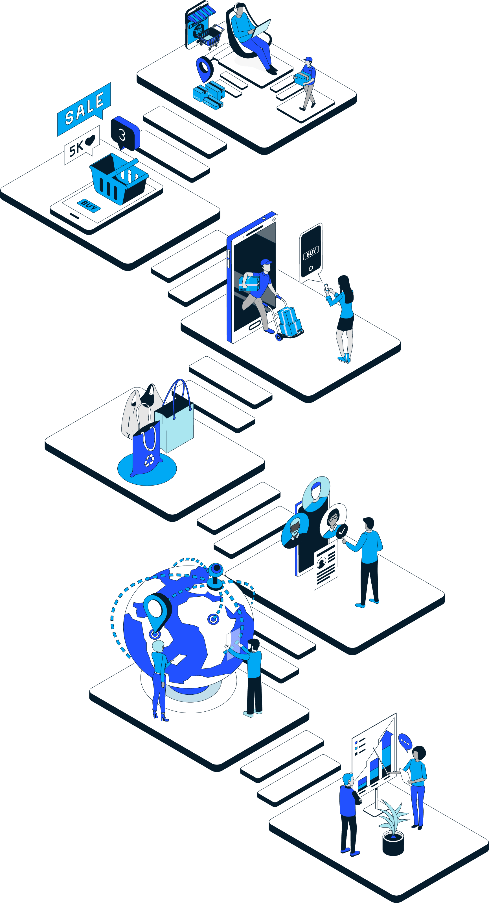
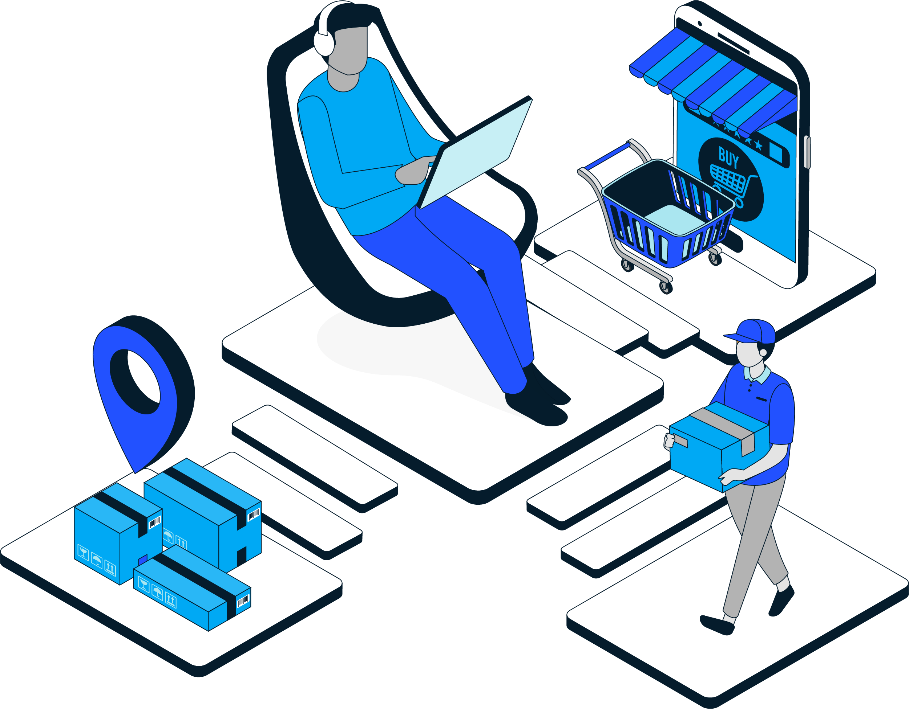
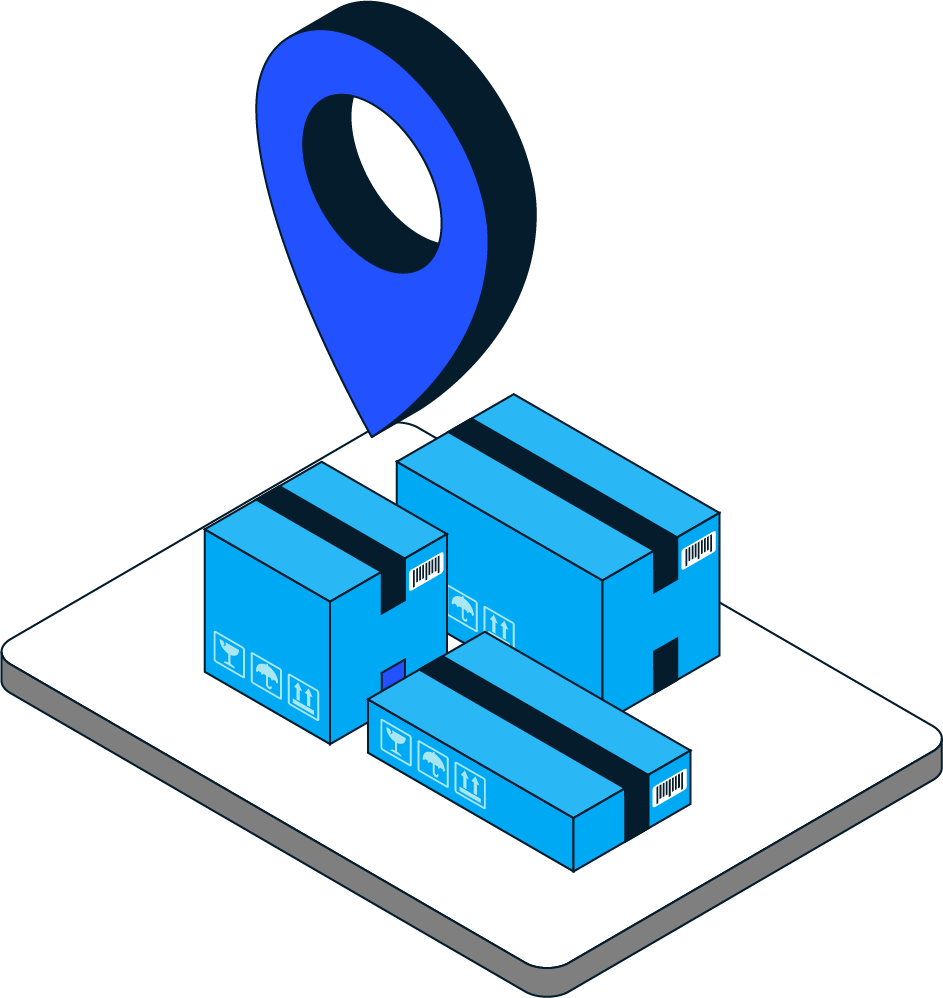
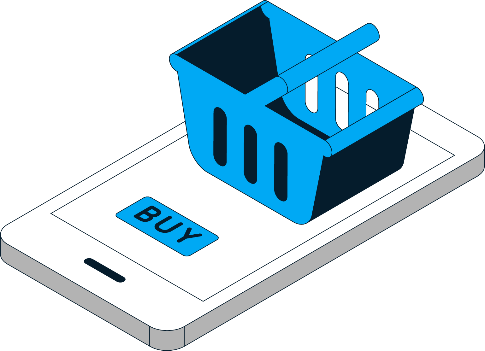
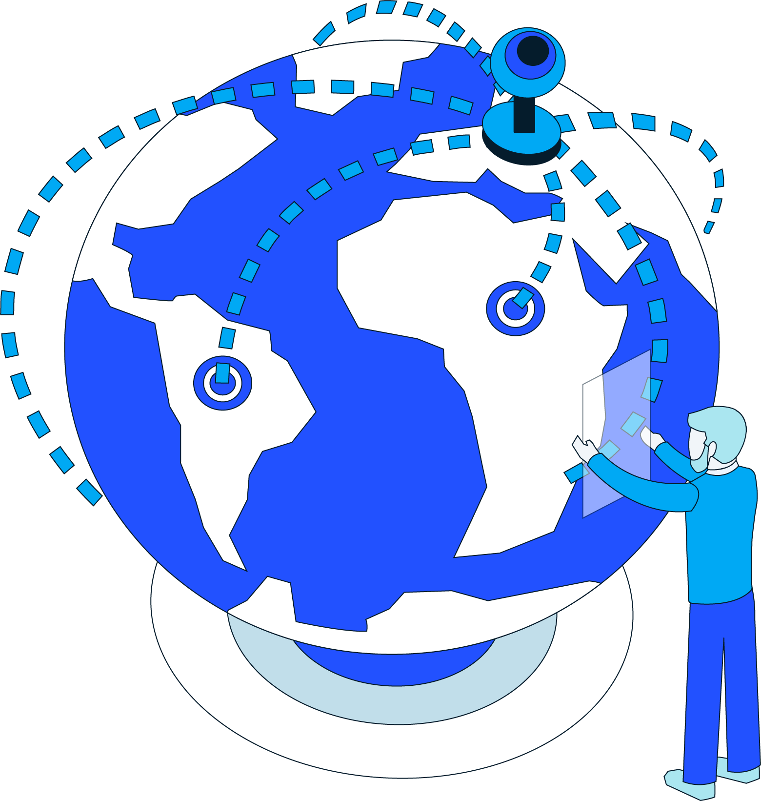

Retail speaks:
Seven imperatives for the industry
After a year like no other, the US retail industry faces
a still-uncertain future. Our latest research highlights
seven imperatives that will position retailers for success—regardless of what is next.
This interactive was a collaborative effort by Praveen Adhi,
Manik Aryapadi, Steven Begley, Becca Coggins, Sajal Kohli,
and Hannah Yankelevich
Every retailer, to some degree, has long had a sense of
what the future of retail could look like: consumers shopping from anywhere at any time on their computers or mobile devices, stores morphing into showrooms or fulfillment centers, products being shipped out for home delivery at ever-increasing speeds, digitization everywhere.
But the future came early. In March 2020, COVID-19 shut down retail locations across the country, forcing US consumers to change their buying behaviors. Trends that had been on a multiyear trajectory saw dramatic acceleration.
What has set the top performers apart? And how
can retailers thrive in 2021 and beyond, even in the midst
of continuing uncertainty? The answers aren’t trivial:
as the nation’s largest private-sector employer, the retail industry affects the lives and livelihoods of millions.
In this report, we present research findings from
the Retail Industry Leaders Association (RILA), with
McKinsey & Company as a knowledge partner.

The changing competitive landscape will require retailers
to pursue seven imperatives. The first four will be familiar
to retailers, so their challenge will be to accelerate progress. The next three imperatives represent additional strategies and efforts that will be increasingly critical in the coming years.
The ideal recipe will vary by retailer, so executives should review these imperatives based on their organization’s starting point, business strategy, and the approach that fits best with their brand’s DNA.
Select one of the imperatives to learn more
1
2
3
4
5
6
7
1
2
3
4
5
6
7
Become omnipotent on omnichannel
This time (and all the time), it's personal
Turbocharge delivery
Take a stand or take a seat
Recalibrate talent strategies
Pursue an eco(system)-friendly strategy
Take
productivity from foundational to transformational
Download the report
Download the report
1. Become omnipotent on omnichannel

2/3
of survey respondents cited the growth of omnichannel and digital shopping as the industry’s most significant trend—and greatest challenge.
65%
of retailers base store decisions on brick-and-mortar performance, with just 35% considering how such moves affect omnichannel.
Given the impact of digital shifts on the customer journey,
how can you upgrade your e-commerce capabilities and rethink your store network?

How to get started

If you’re on the journey, how to accelerate
How to get started
Determine where to play in omnichannel based on your DNA and the categories you play in.
Identify the unique value of each store in the context of a market strategy.

If you’re on the journey,
how to accelerate
Increasing value at the store level to raise the performance of each link in the network.
Continue to invest in detailed and real-time customer analytics.
Back to top
2. This time (and all the time), it’s personal
76%
of consumers changed stores, brands, or channels in 2020.
100%
of top-quartile¹ retailers cited omnichannel personalization as a top 5 priority, but only 15% of retailers have fully implemented it across all channels.
1
Top-quartile retailers defined by those in the top quartile of revenue growth from 2019 to 2020.
Where is your
company in
its omnichannel personalization journey?
How to get started

If you’re on the journey, how to accelerate

How to get started
Define the right moments in the customer journey where you can provide the greatest customer benefit.
Evaluate technology options that balance level of investment and high fidelity.
Stand up lean pilots with a cross-functional team.
Coordinate corporate efforts with store teams.
Rapidly get customer feedback and iterate.
If you’re on the journey,
how to accelerate
Double down on measurement methodologies to inform decision making.
Expand to the upper and lower parts of the funnel.
Actively solicit crew and customer feedback to generate new ideas and improve the current customer journey.
Back to top
3. Turbocharge
delivery
>90%
of consumers see 2- to 3-day delivery as the baseline, and
30% expect same-day delivery.
>75%
of the specialty retail supply chain leaders have made 2-day delivery
a priority, and 42% are aiming for same-day delivery by 2022.
How are you
planning to
accelerate delivery
to meet rising consumer expectations?
How to get started
If you’re on the journey, how to accelerate
How to get started
Identify the customer’s North Star.
Quantify the business case and create the
road map.
If you’re on the journey,
how to accelerate
Build a fit-for-purpose network by rethinking the end-to-end supply chain.
Foster ecosystem collaboration with marketplace providers and suppliers.
Back to top
4. Take a stand or
take a seat
1/3
of survey respondents² stopped using a brand based on its social actions.
2
Survey reference.
71%
indicated they would lose trust in a brand forever if it placed profits
over people.
What steps are
you taking to
actively support
ESG principles?


How to get started
If you’re on the journey, how to accelerate

How to get started
Develop a credible purpose story and ESG priorities, backed by societal commitments.
Proactively take a stand on issues by tailoring external engagement and communications to highlight the company’s values.
If you’re on the journey,
how to accelerate
Measure the impact of doing good by setting performance targets and defining metrics
aligned with purpose goals.
Establish bold, measurable ESG goals to guide
the company and track progress.
Back to top
5. Recalibrate
talent strategies
70%
of survey respondents plan to rely more heavily on flexible labor over the next 3 years.
increase workforce diversity.
Leading retailers have committed to
How will you adapt
your talent strategy
take advantage of nontraditional labor and remote work while building a diverse workforce?

How to get started
If you’re on the journey, how to accelerate
How to get started
Develop a road map to close the major
talent gaps.
Provide attractive development opportunities, clear career paths, and competitive salaries
and benefits.
Define and commit to a bold D&I aspiration,
both internally and externally.
If you’re on the journey,
how to accelerate
Build capabilities that provide access to
upskilling opportunities.
Consider how (or if?) your organization could
take advantage of on-demand labor models
and remote working.
Back to top
6. Pursue an eco(system)-friendly strategy
6
of the 7 largest companies by market cap participate in ecosystems.
12
sectors could reinvent themselves as ecosystems and function as a $60 trillion economy by 2025.
3
3
Violet Chung, Miklós Dietz, Istvan Rab, and Zac Townsend, “Ecosystems 2.0: Climbing to the next level,” McKinsey.com, September 11, 2020.
Do you have an ecosystem strategy
in place? How will
you participate, compete, or coexist with ecosystems?

How to get started

If you’re on the journey, how to accelerate
How to get started
Explore nontraditional retail partnerships.
Analyze and learn from successful
ecosystem players.
If you’re on the journey,
how to accelerate
Decide what role the company will play in the ecosystem—orchestrator, service provider, or participant.
Choose a business model that will create shareholder value without compromising the brand’s integrity.
Back to top
7. Take productivity from foundational
to transformational
20%
of sales, but fulfillment networks are built to handle half that volume.
E-commerce is forecast to exceed
20–30%
of time can be freed up by automating repetitive tasks across G&A functions.
What steps have
you taken to deploy analytics and automation across
the P&L?
Back to top
Few if any retailers will be able to address all of these imperatives at scale and at the same time—the overall cost and complexity will be too high. Retailers that can accelerate their progress with targeted investments, embrace new approaches to talent and ecosystems,
and free up resources to support promising ventures have the potential to become leaders
in the industry for years to come.
Becca Coggins
Sajal Kohli
is a partner in McKinsey’s Chicago office, where
are senior partners; Manik Aryapadi is a partner in the Cleveland office; Steven Begley is a partner in the New Jersey office; and Hannah Yankelevich is an associate partner in the Minneapolis office.
and
Praveen Adhi
We wish to thank the following for their contributions to this report:
Brian Cornell Chairman and CEO, Target
Jess Dankert VP, Supply Chain, RILA
Mary Dillon CEO, Ulta Beauty
Brian Dodge President, RILA
Alex Gourlay Co-COO, Walgreens Boots Alliance
Kevin Holt CEO, Ahold Delhaize USA
Craig Menear Chairman and CEO, The Home Depot
Erik Nordstrom CEO, Nordstrom
Javier Quiñones President and CSO, IKEA US
Todd Vasos CEO, Dollar General
Recommended reading
Article
DTC e-commerce: How consumer brands can get it right
Article
Think fast: How to accelerate e-commerce growth
Back to top
Download the report
Download the report